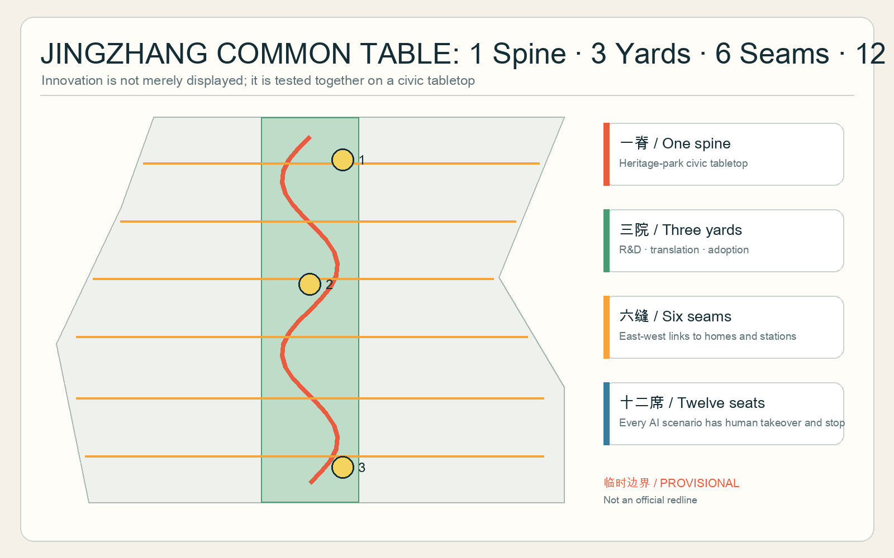
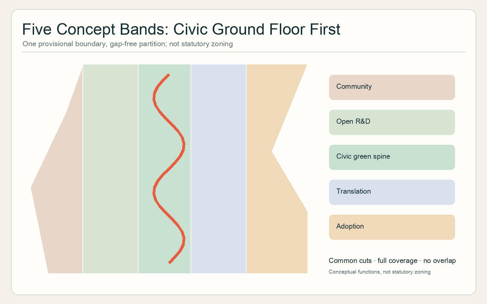
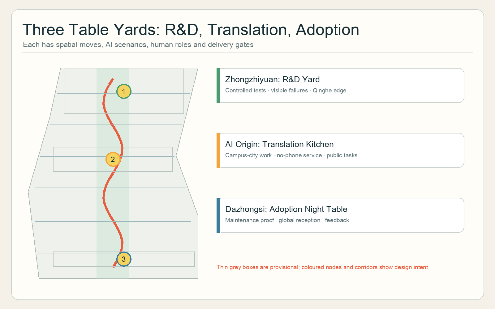
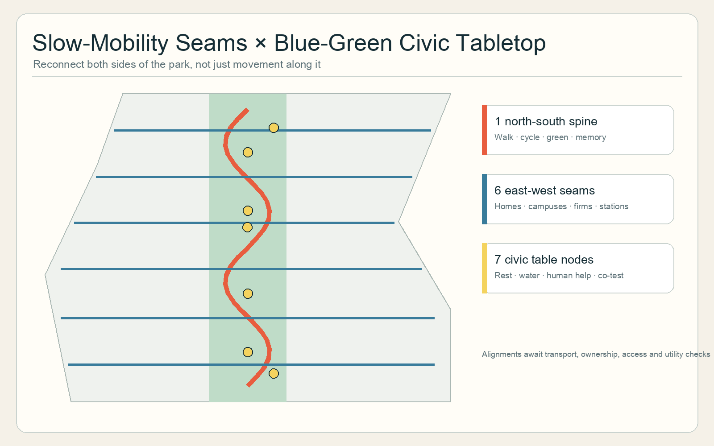
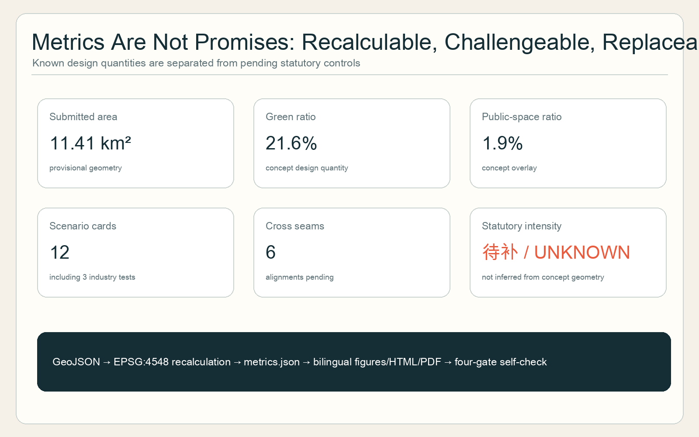

CONCEPT PROPOSAL · PROVISIONAL GEOMETRY
JINGZHANG COMMON TABLE
Put innovators and neighbours at the same table.
Not an official redline or implementation commitment.
Overview Map

Three-Level Scope
Research strategy → overall urban structure → three detailed prototypes.

Key Areas

Land Use · Walking · Blue-Green Public Space

Buildings and Renewal Projects
Adaptable ground floors; no parcel-level demolition claim.
Three table yards and six audited seams.
Three gated phases, never automatic rollout.
AI Scenarios
SC-01 · Civic scenario
SC-02 · Civic scenario
SC-03 · Industry test
SC-04 · Industry test
SC-05 · Civic scenario
SC-06 · Civic scenario
SC-07 · Industry test
SC-08 · Civic scenario
SC-09 · Civic scenario
SC-10 · Civic scenario
SC-11 · Civic scenario
SC-12 · Civic scenario
Core Metrics
11.41 km²submitted provisional area
21.6%concept green ratio
1.9%concept public-space ratio

Task Coverage
Announcement 1.3–1.5 and agent.1–agent.6 are mapped to chapters, geometry, metrics, drawings and checks.
Self-check Status
Deterministic, spatial, visual and professional-evidence checks must all pass after finalization.
Sources
Official announcement, cleared Agent taskbook, local professional-standard snapshots and six clearly limited comparative cases.
Assumptions
| Item | Status |
|---|---|
| Official boundaries and controls | Pending |
| Ownership, buildings and utilities | Pending field/professional verification |
| Operations and AI pilots | Conceptual, gated and stoppable |